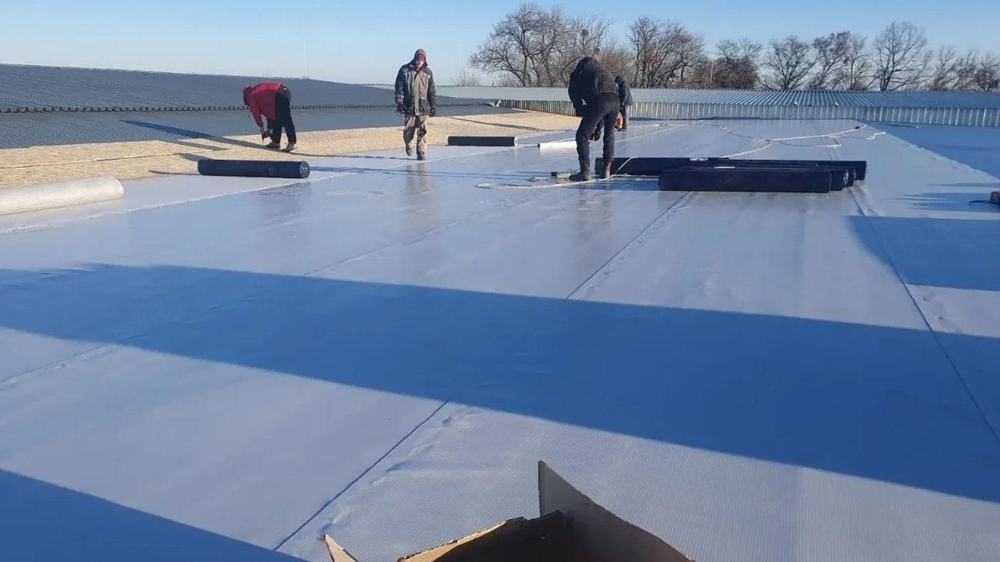

ТРЦ і торгові центри
Великі площі, внутрішнє водовідведення, парапети, рекламні та інженерні конструкції, проходки вентиляції.
Проєктування та влаштування нових плоских і скатних покрівель для ТРЦ, супермаркетів, виробництв, цехів, м’ясокомбінатів, складів, логістичних та адміністративних об’єктів.

Конструкція залежить від призначення будівлі, площі, основи, інженерного обладнання та режиму експлуатації.
Великі площі, внутрішнє водовідведення, парапети, рекламні та інженерні конструкції, проходки вентиляції.
Плоскі мембранні покрівлі, примикання до обладнання, воронки, зони обслуговування та безпечні проходи.
Покрівельні системи для промислових будівель з урахуванням великих прольотів, інженерних виходів і режиму роботи об’єкта.
Опрацювання покрівлі навколо вентиляційного, холодильного й технологічного обладнання без непідтверджених типових рішень.
Мембранні й металеві системи для великих площ, вантажних зон, прибудов та адміністративних блоків.
Підбір рішення під геометрію, основу, ухили, водовідведення та кількість інженерних проходок.
Вивчаємо плани, конструкцію покриття, основу, ухили, навантаження та розташування обладнання.
Опрацьовуємо парапети, воронки, деформаційні шви, проходки, примикання та зони обслуговування.
Організовуємо послідовність робіт, підготовку основи, укладання шарів, кріплення і зварювання мембрани або монтаж металевої системи.
Перевіряємо ключові вузли, шви, водовідведення, проходки та завершені ділянки за етапами.
Для плоских покрівель застосовуємо ПВХ-мембранні системи з механічним кріпленням і зварюванням швів гарячим повітрям. Для окремих виробничих, складських та адміністративних будівель розглядаємо профнастил, фальцеві й інші металеві системи.
Матеріал не обираємо окремо від конструкції. Спочатку перевіряємо основу, ухили, водовідведення, вентиляцію, проходки та умови подальшого обслуговування.
METROPLEX працює у проєктуванні, малоповерховому будівництві та покрівельних рішеннях з 2017 року. Підтверджуємо досвід реальними фотографіями об’єктів і технічними поясненнями.
У кейсі показано комерційний об’єкт з мембранною системою, парапетами, примиканнями та проходами.
Розглядаємо ТРЦ, супермаркети, магазини, виробничі будівлі, цехи, м’ясокомбінати, харчові підприємства, склади, логістичні комплекси, СТО та адміністративні об’єкти.
Рішення залежить від основи, ухилів, водовідведення, кількості проходок, режиму експлуатації та проєктних вимог. Для багатьох об’єктів підходить ПВХ-мембранна система, але вибір робиться після аналізу.
Так. Перед початком перевіряємо проєктні рішення, склад шарів і ключові вузли. За потреби уточнюємо або розробляємо окремі деталі покрівлі.
Корисні плани, розрізи, площа покрівлі, фотографії, відомості про основу, висоту парапетів, воронки та інженерне обладнання.
Вкажіть призначення об’єкта, площу, тип основи, поточний етап будівництва та доступну проєктну документацію.